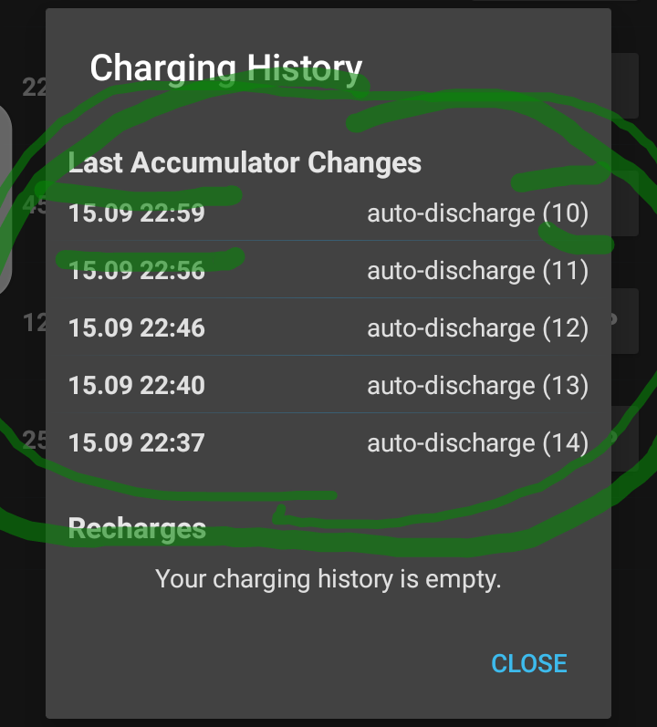
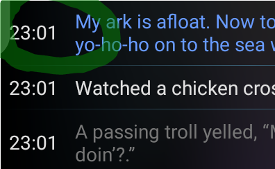
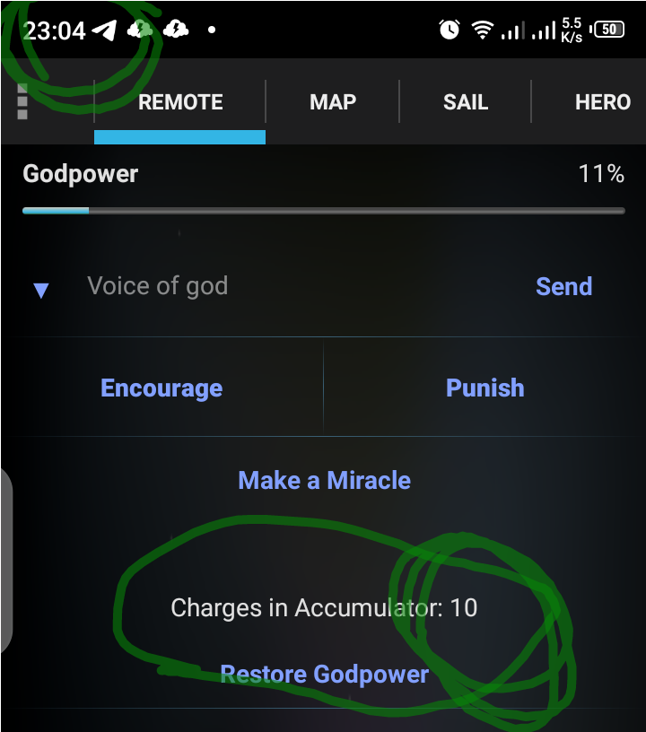

Как видно из первого скриншота, после всех подземных автораспаковок в 22:59 оставалось 10 зарядов:

В 23:01 начался заплыв (второй скриншот):

В 23:04 заплыв завершён, зарядов всё ещё 10. Следующий скриншот:

При этом я помню, хоть скриншотов и нет, что я закончил подземелье с малой полоской праны (после босса то), и что заряды я не покупал.
Спасибо, конечно, за непотраченный заряд, но я предпочитаю балл благодарности.